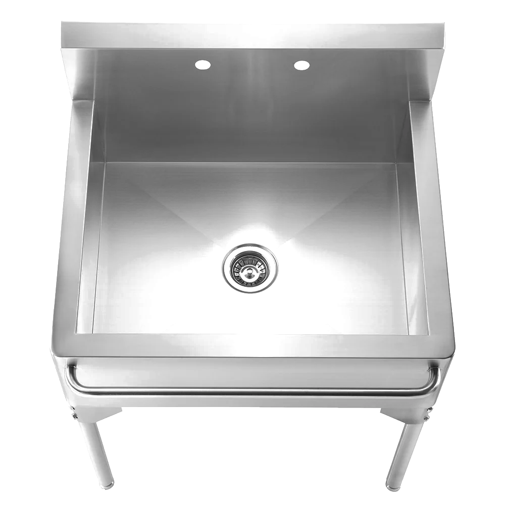
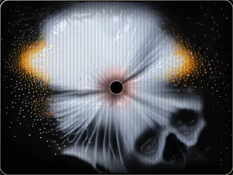
Water, dreaming, on a touch screen filling the bowl. Reach in; it slips away.
30 × 25 × 39½ in · bowl 26 × 21 × 9¾ in
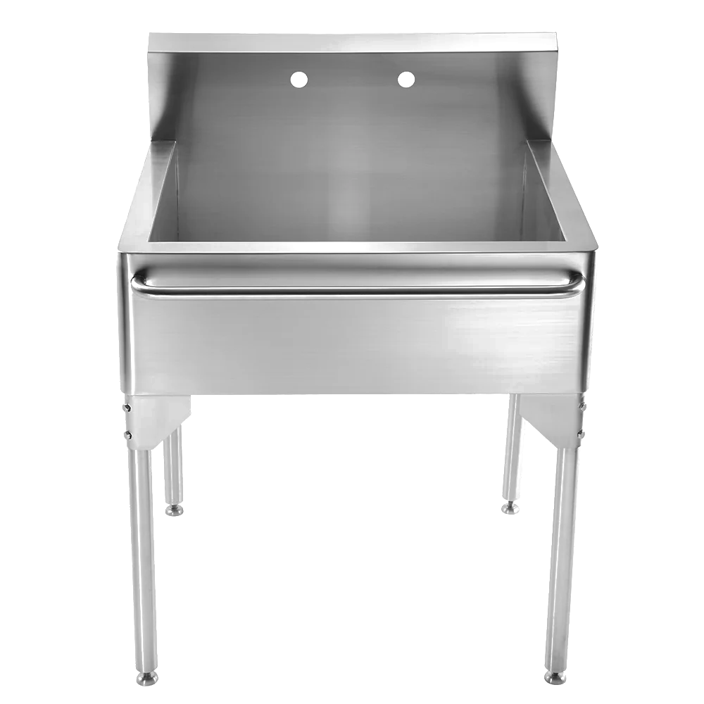
approx. to scale
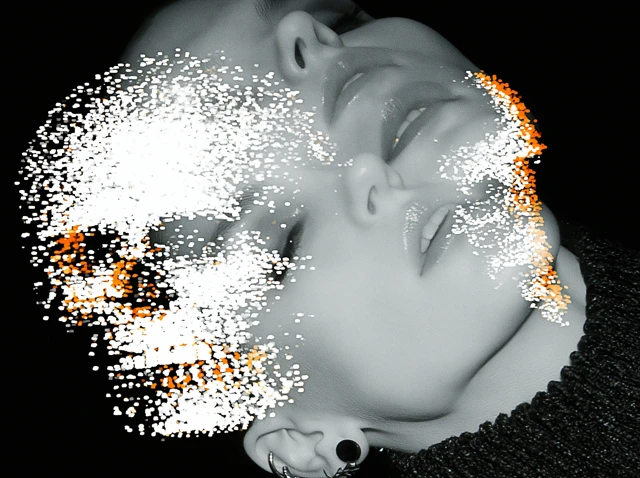
01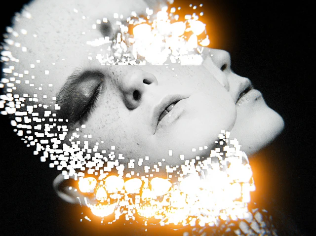
02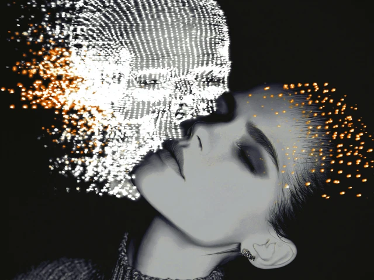
03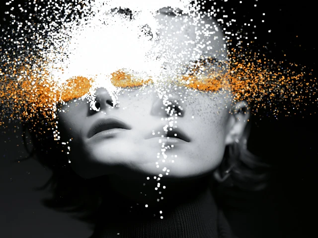
04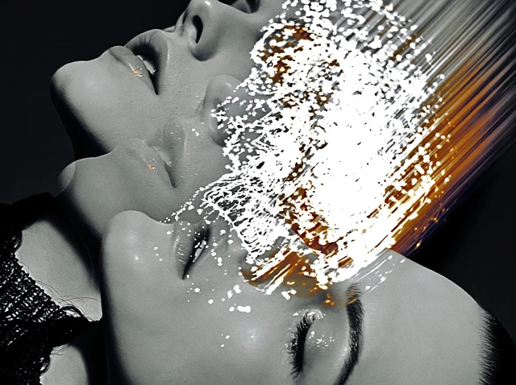
05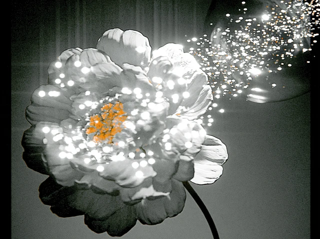
06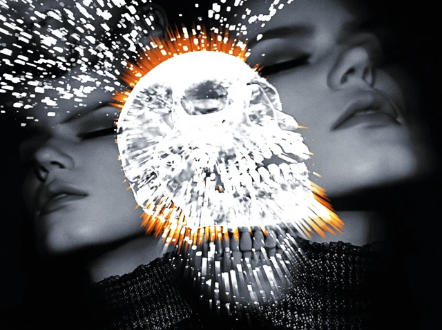
07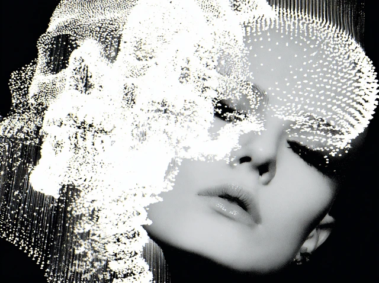
08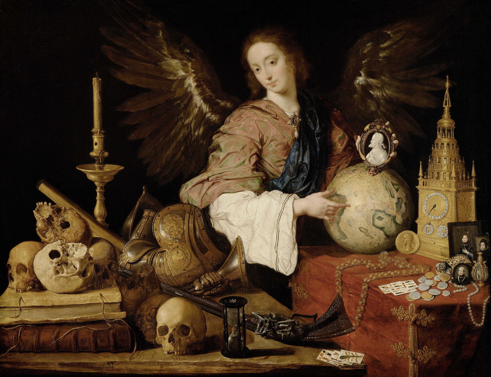
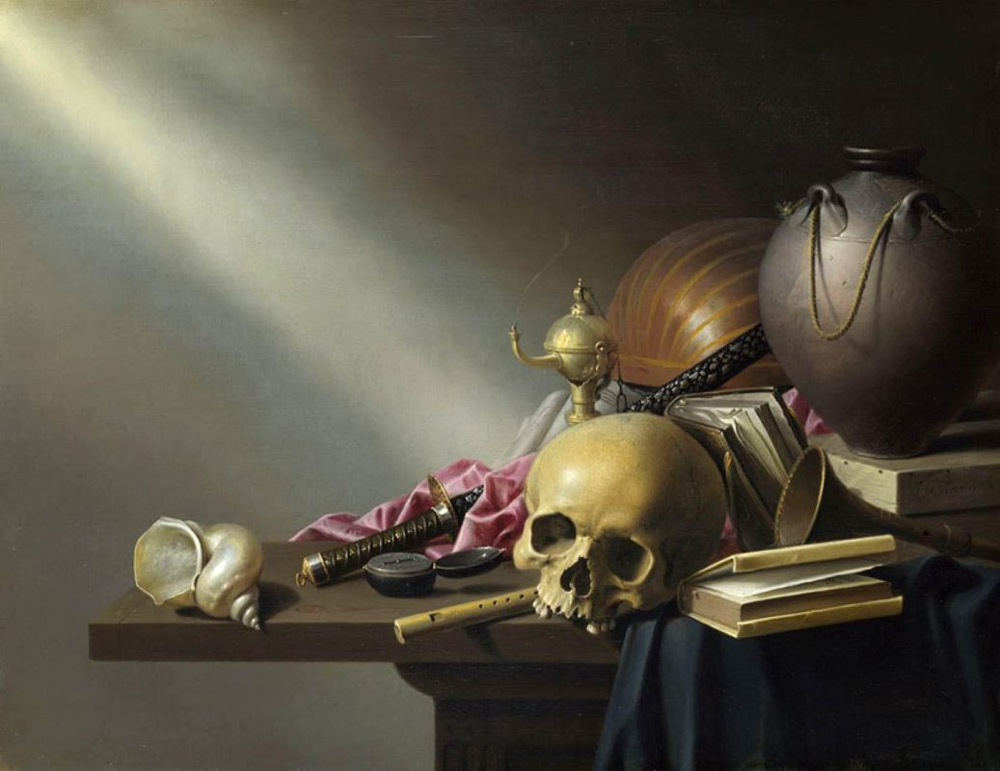
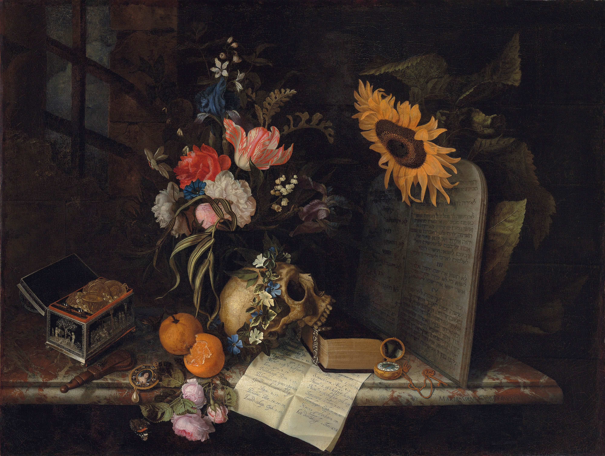

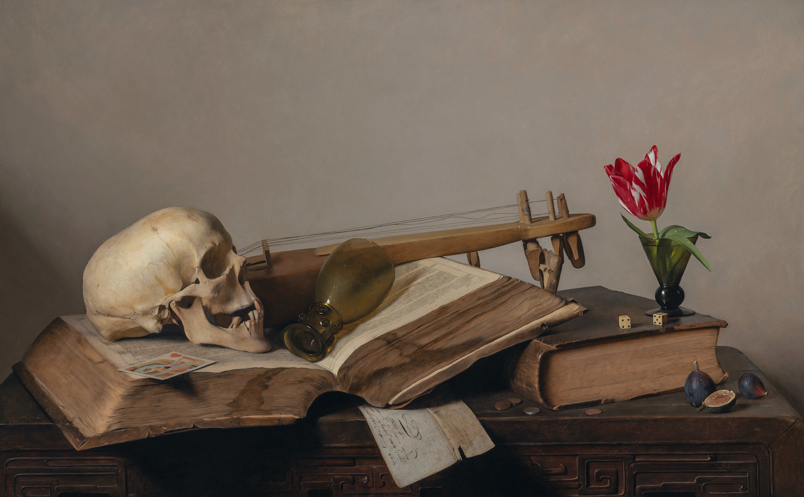
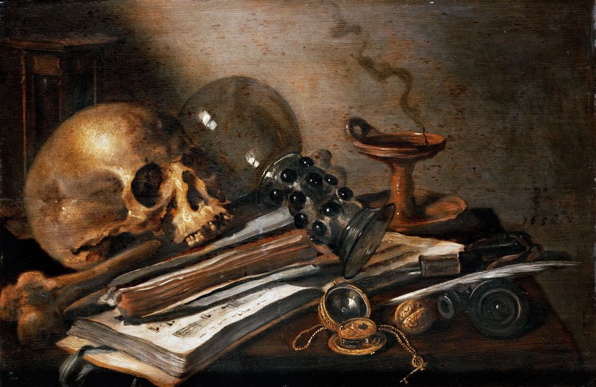
× 28 moods × 18 lights
≈ 5 years, a dream every 2 min
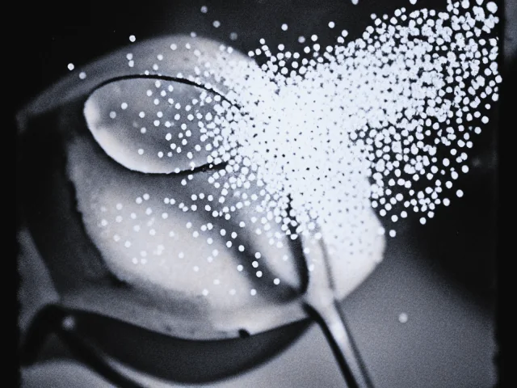
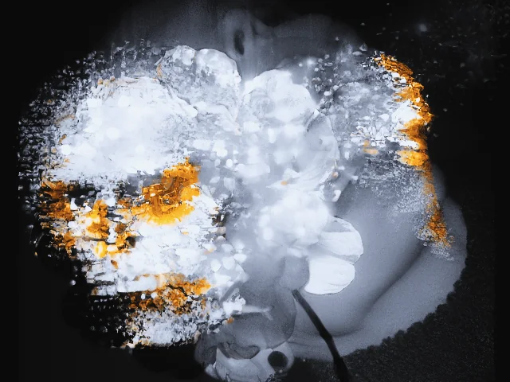
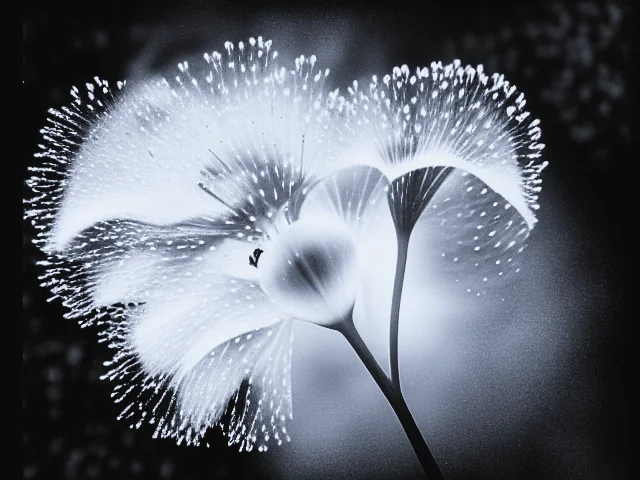
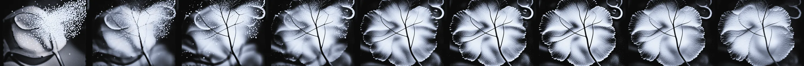
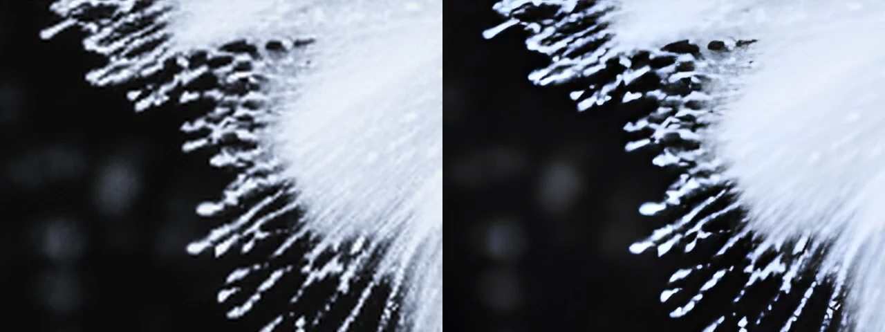
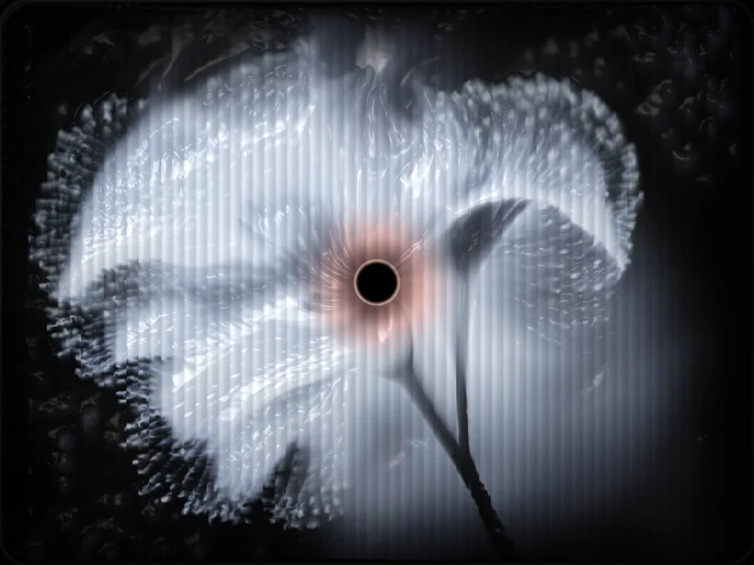
Bowed over a sink, a figure brings up something gold: treasure, or vomit. Her print hangs as a mirror, so your face lands on hers. In the bowl, water is a machine dreaming live, every dream leaning toward eight pictures chosen by hand. Turn the handle, and the water stops: no water, no dream. Reach in, and it slips through your fingers.
Dutch still lifes of the 1600s painted skulls, cut flowers and soap bubbles: homo bulla, man is a bubble. Here the bubble is AI, twice over. Together the swapped letters, an and er, spell anēr, Greek for man: a mortal. Asked to judge, Pontius Pilate washed his hands and asked, “what is truth?”: quid est veritas. This sink asks you to reach anyway.
Hold the eye on the glass, and a camera lends your face to the next dream, once. Nothing is kept.
Allegory of Vanity · c.1636 · KHM Vienna
Allegory of the Vanities… · c.1640 · Nat. Gallery
Vanitas with a Sunflower · 1668 · Rijksmuseum
Vanitas Still Life (detail) · 1630 · Mauritshuis
Vanitas Still Life · contemporary
Vanitas Still Life · dated 1650
In the 1600s the Dutch Republic had just gotten rich, fast: global trade, a new merchant class, tulip futures, more imported luxury than anyone knew what to do with — and a rigid Calvinism that held your possessions cannot save you. Vanitas is that contradiction in paint.
Picture a patron: he commissions his shells, gold and books, has them rendered gorgeously, then hangs a skull over the pile so the indulgence reads as a sermon. Have the luxury, moralise the luxury.
Slop is our tulip mania — infinite cheap abundance, generated faster than anyone can value it. Vanitas told the 17th century its wealth was hollow while cashing the cheque; this piece says it to the feed.
San Francisco · 2026
From the sink, the print rises on one post: freestanding, no wall. Its surface is reflective and lit on purpose, so your own face lands on the bowed figure. Behind it hides a small camera.
In the bowl, a screen is the water, running to the drain. You reach for the tap the way you would to wash, and what comes is a dream.
It boots straight into the water; a power cut is just the tap turned off. On the web, the same water runs as veritas, and a touch in either moves both. On the sink, a QR code opens it: sink == sync, one water.